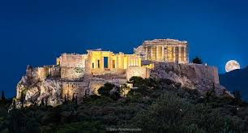
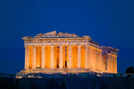
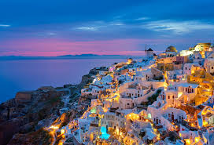
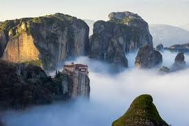

الأكروبوليس موقع أثري قديم في أثينا ويضم معابد تاريخية تعود إلى الحضارة اليونانية القديمة.
Η Ακρόπολη της Αθήνας είναι ένας αρχαίος αρχαιολογικός χώρος που περιλαμβάνει σημαντικούς ναούς της αρχαίας ελληνικής ιστορίας.

البارثينون معبد يوناني قديم مخصص للإلهة أثينا ويعد رمزًا للحضارة اليونانية.
Παρθενώνας είναι ένας αρχαίος ελληνικός ναός αφιερωμένος στη θεά Αθηνά και σύμβολο του ελληνικού πολιτισμού.

سانتوريني جزيرة يونانية مشهورة بمنازلها البيضاء وإطلالتها الجميلة على البحر.
Η Σαντορίνη είναι ένα διάσημο ελληνικό νησί γνωστό για τα λευκά σπίτια και τη μαγευτική θέα στη θάλασσα.

ميتيورا منطقة تضم أديرة مبنية فوق صخور عالية وتعد من أعجب المناظر الطبيعية في اليونان.
Τα Μετέωρα είναι μια περιοχή με μοναστήρια χ